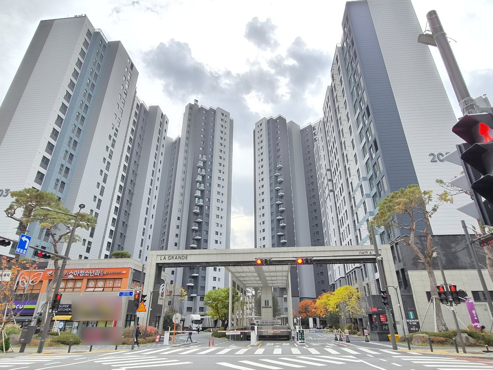
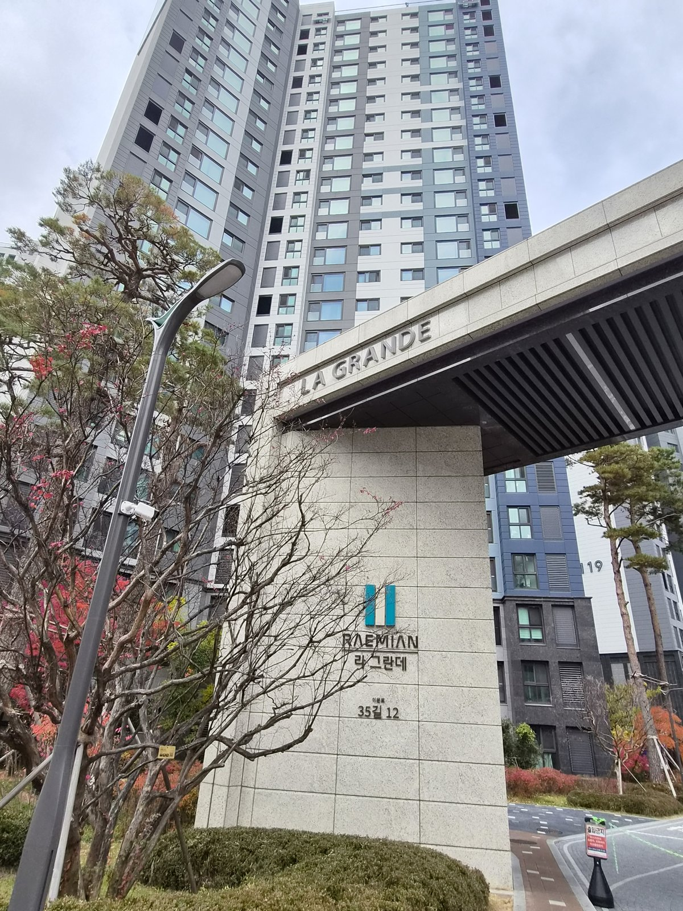
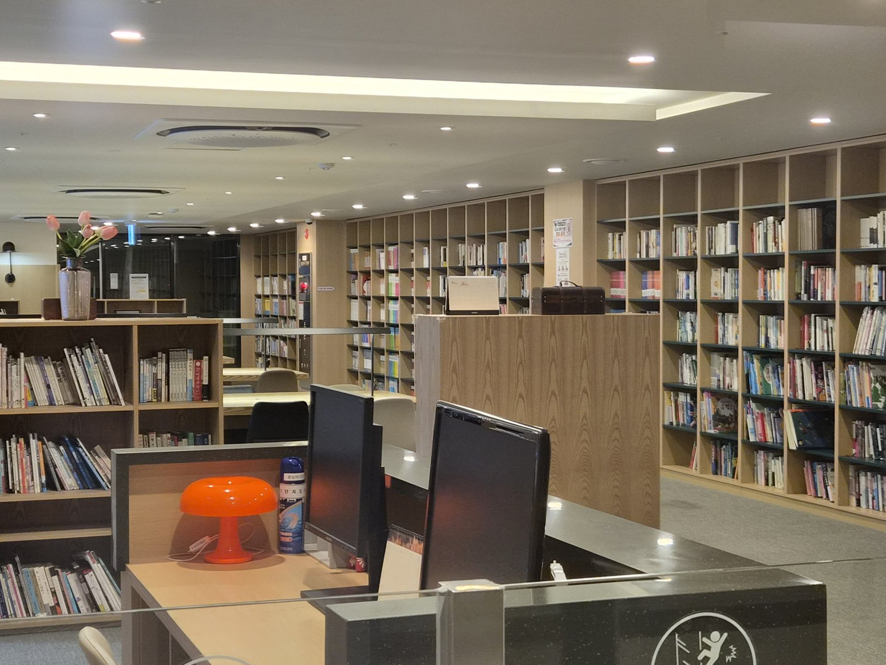
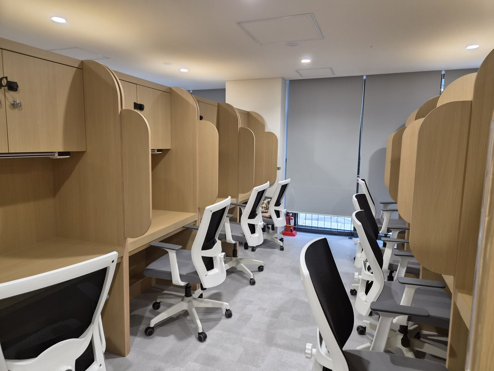
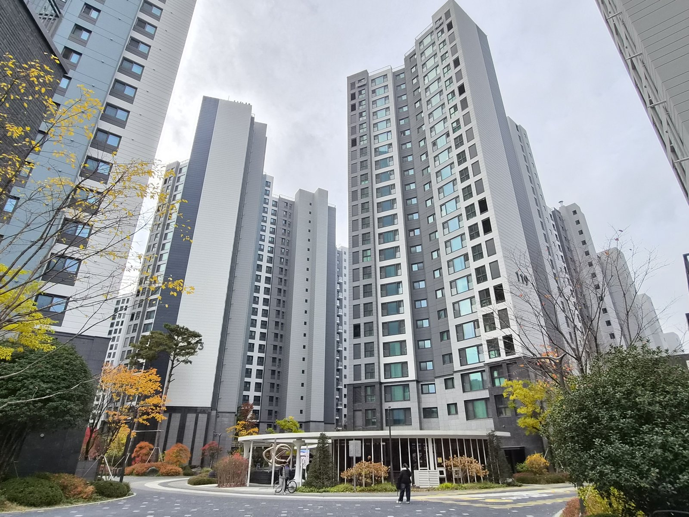
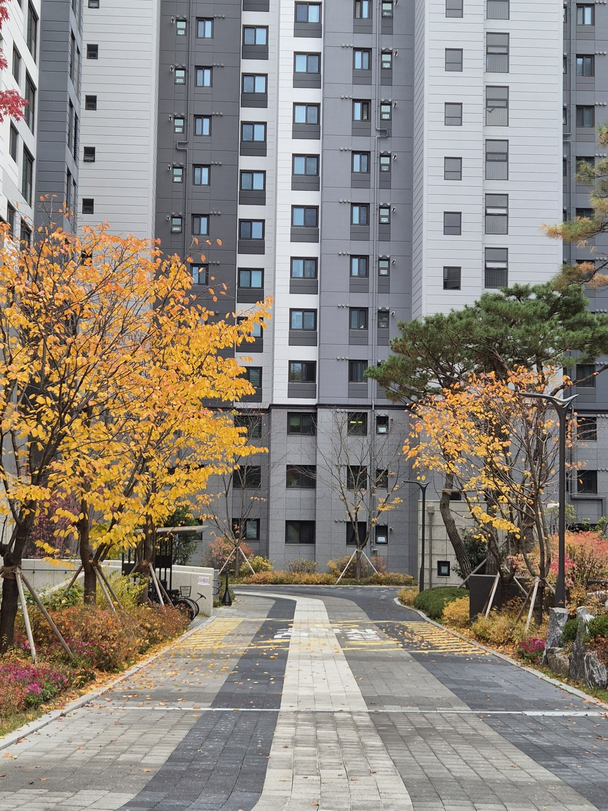
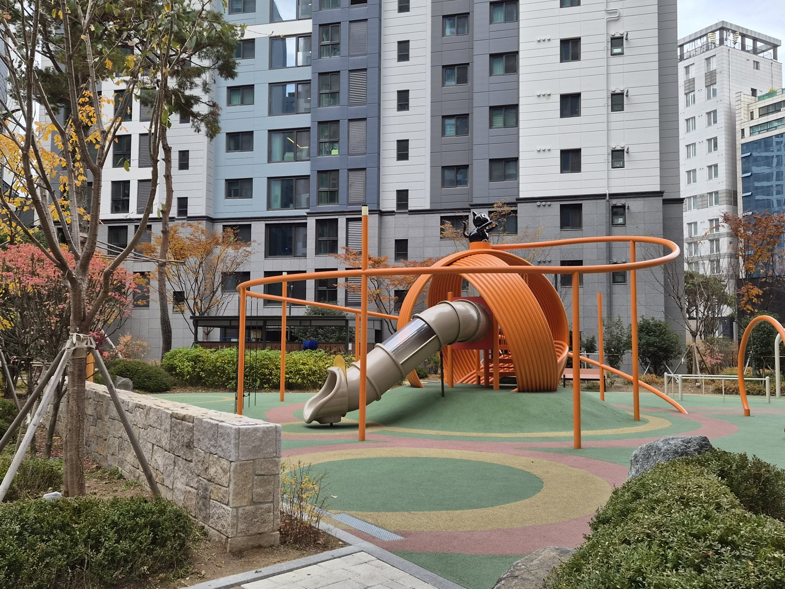
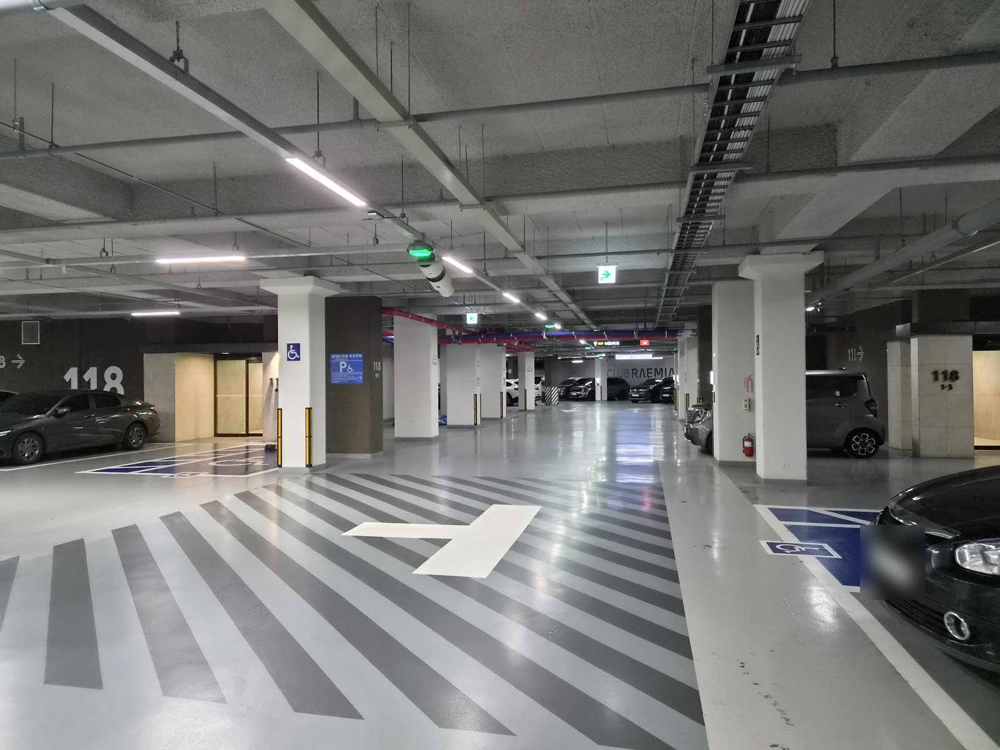
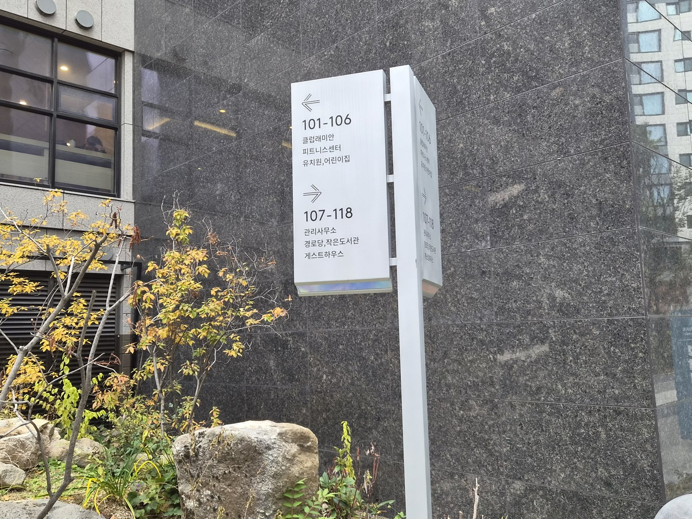
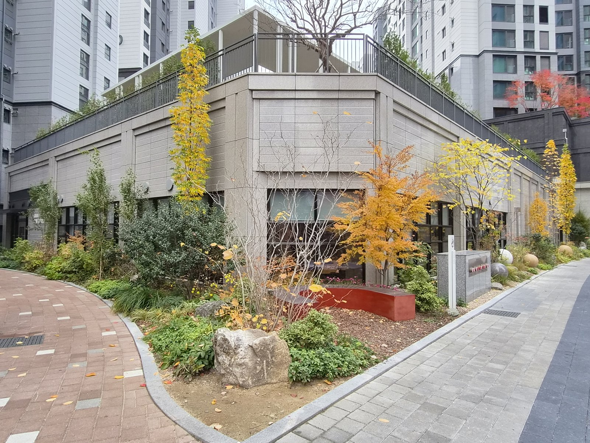

“여기 팔고 마포로 오고 싶어요.”
얼마 전 마포그랑자이 사무소에
래미안라그란데에 사시는
분이 찾아오셨어요.
입주 2년이 다가오니 이제
마포로 옮기고 싶다고요.
그런데 저도
래미안라그란데 주민이라,
그 마음이 어떤 건지 누구보다
잘 알겠더라고요.
이유를 여쭤보니 “그래도 마포가
한 단계 위잖아요”
하시더라고요 ㅎㅎ
새 아파트에서 2년 살아 보니,
이제는 입지를 한 단계 올리고
싶어지신 거예요.
안녕하세요. 착한언니복덕방 신촌자이엘라&마포그랑자이 (착한언니) 부동산입니다.
저는 이 단지에
입주 때부터 살고 있어요.
어느새 입주 2년 차,
첫 전세 계약들이
만기를 바라보는 시기가 왔어요.
오늘은 중개사로서 본 숫자와
입주민으로서 겪은 2년을
나눠서 정리할게요.
사는 사람이라 좋게만 쓰지 않도록,
아쉬운 점도 같이 적을게요.

▲ 래미안라그란데 GATE 4 정문
(2026.11 직접 촬영 · 주변 간판 흐림 처리)
| 1. 래미안라그란데, 어떤 단지인가요? |
| 항목 | 내용 |
| 위치 | 동대문구 이문동 (이문1구역 재개발) |
| 규모 | 3,069세대 · 최고 27층 · 39개 동 |
| 입주 | 2025년 1월 시작 |
| 시공 | 삼성물산 |
| 가까운 역 | 1호선 외대앞역 · 신이문역 (동에 따라 도보 10~15분) |
세대수·층수·입주 시기는 언론 보도 기준이에요

▲ 단지 문주 —
LA GRANDE · 이문로35길

▲ 단지 앞 큰길 — 오른쪽 래미안라그란데,
왼쪽 길 건너 이문아이파크자이
길 하나를 사이에 두고
이문아이파크자이와
마주 보고 있어요.
두 단지를 합치면 이 일대에만
신축 7천 세대가
넘게 모여 있는 셈이에요.
| 2. 입주 2년 차, 왜 지금 봐야 하나요? |
입주장에 계약한 전세·월세는
대부분 2년 계약이에요.
그래서 전월세 신고에
적힌 계약 만기를 세어 봤어요.
| 계약 만기 | 2027년 1월 | 2월 | 3월 | 4월 | 5월 | 6월 |
| 건수 | 29 | 238 | 457 | 147 | 88 | 41 |
국토부 전월세
실거래(래미안라그란데, 2025.1~2026.11 계약분)의
계약기간 기준 · 갱신청구권을
쓰면 실제로 나오는 물건은 이보다 적어요
✔ 2027년 2~4월에
만기가 가장 많아요
✔ 같은 시기에
세입자는 갱신과 이사를,
집주인은 갱신·신규 전세·실거주를
함께 고민하게 돼요
✔ 만기가 몰린다고
전셋값이 떨어진다고
단정할 수는 없어요 —
갱신 비율에 따라 달라져요
▲ 단지 안 암석원 산책길 —
입주 2년 차 가을
| 3. 전세, 지금 얼마에 계약되고 있나요? |
갱신 계약은 빼고
신규 계약만 봤어요.
갱신은 인상 상한(5%)이
적용될 수 있어서
지금 시세와 다르거든요.
| 59㎡ 신규 전세 | 25년 1Q (입주장) | 25년 4Q | 26년 1Q | 26년 2Q | 26년 3Q |
| 중위 | 4억 9,000 | 6억 | 6억 4,000 | 7억 3,000 | 7억 1,000 |
| 건수 | 246 | 11 | 9 | 5 | 4 |
국토부 전월세 실거래 · 전세 = 월세 0원 ·
26년 2Q부터는 분기당 4~5건이라
표본이 작아요
| 84㎡ 신규 전세 | 25년 1Q (입주장) | 26년 1Q | 26년 3Q |
| 중위 | 6억 | 7억 5,000 | 9억 |
| 건수 | 212 | 5 | 3 |
올해 4분기부터는 갱신 계약이
신고되기 시작했어요.
59㎡ 갱신 7건 중위
5억 3,550만 원,
84㎡ 갱신 5건 중위
6억 6,000만 원이에요.
같은 집이라도
갱신이냐 신규냐에 따라 1억
원 넘게 차이가
날 수 있다는 뜻이에요.
✔ 신규 전세 숫자는
입주장 물량이 빠진 뒤라 건수가
적어요 — 계약 전에는
지금 매물로 다시 확인해요
| 4. 매매는요? |
| 면적 | 입주 초 (2025.1~3) | 최근 (2026) |
| 59㎡ | 11억 2,000 ~ 12억 | 16억 4,000 (26.10 · 19층 · 중개) · 15억 2,010 (26.6 · 직거래) |
| 84㎡ | 13억 2,000 ~ 13억 8,900 | 13억 9,000 (25.10 · 2층) 이후 거래 없음 |
국토부 매매 실거래 · 해제 제외 ·
2년 동안 매매 신고가 12건뿐이라
'시세'로 말하기엔 표본이 적어요
· 직거래는 특수 거래일 수 있어요
매매가 적은 건 입주 2년이
안 돼 팔기 전에
따져 볼 것이 많고,
토지거래허가 등 거래 조건도
있었기 때문으로 보여요.
그래서 이 단지 매매는 한두 건의
숫자보다 호가와 실거래를
같이 봐야 해요.
| 5. 2년 살아보니 — 좋은 점 3가지 |
① 커뮤니티가
생활 안으로 들어와 있어요
독서실·작은도서관에 스크린골프,
사우나까지 있어요.
사우나는 금·토·일만 운영하고
입주민만 이용할 수 있어요.
조식 서비스는 아직 운영 전이고,
지금 입주민 투표 중이에요.

▲ 커뮤니티 작은도서관

▲ 독서실 (여) 좌석
② 산책할 곳이 정말 많아요
단지 안 조경도 좋지만,
126·127동 쪽은
나가면 바로
한예종(한국예술종합학교)
후문이에요.
의릉과 캠퍼스를
따라 산책하기 너무 좋아요.

▲ 동 사이 광장과 커뮤니티 동

▲ 단지 안 산책로
③ 지하주차장으로 다 이어져요
지하주차장에서 커뮤니티까지
전부 연결돼 있어서,
비 오는 날이나 추운 날에도
밖에 안 나가고 다닐 수 있어요.
단지 안에 놀이터와
유치원·어린이집도 있어서
아이 키우는 집에도 동선이 편해요.

▲ 단지 안 놀이터

▲ 지하주차장 — 동 출입구 바로
연결 (차량 번호판 흐림 처리)
| 6. 커뮤니티, 뭐가 있나요? (현장 안내문 기준) |
| 구분 | 내용 |
| 안내판 표시 시설 | 클럽래미안 · 피트니스센터 · 유치원·어린이집 · 관리사무소 · 경로당 · 작은도서관 · 게스트하우스 |
| 독서실 운영 | 06:00 ~ 익일 01:00 · 연중무휴 |
| 독서실 요금 | 월 정기권 개인실 5만 원 · 일반실 3만 원 / 일일권 1인실 3천 원 · 일반실 2천 원 |
| 정기권 신청 | 매년 1월·7월 선착순 배정 (12월·6월 안내) · 앱으로 신청한 입주민만 |
| 사우나 | 금·토·일 운영 · 입주민 전용 |
| 스크린골프 | 있음 |
| 조식 | 아직 운영 전 · 도입 여부 입주민 투표 중 |
2026년 11월 단지 안 안내문
촬영 + 입주민(필자) 확인
기준 · 운영 내용은 바뀔 수
있어요 (관리 주체 공지 확인)

▲ 커뮤니티 안내판

▲ 커뮤니티 동 주변 정원
✔ 정기권 신청이 12월에 열리니,
1월 입주·전세 들어오시는
분은 신청 시기를 놓치지 마세요
| 7. 2년 살아보니 아쉬운 점 |
솔직히 역이 좀 멀어요.
이게 제가 느끼는 거의
유일한 단점이에요.
동에 따라
외대앞역·신이문역까지 걸어서
10~15분이라,
매일 지하철 타시는 분은
동 위치를 꼭 보세요.
대신 차가 있으면 괜찮아요.
내부순환로까지 10~15분,
강변북로도 10~15분이면
올라타요.
| 8. 착한언니 현장 노트 — 2년 차에 챙길 것 |
대단지라 어느 동이냐에
따라 가까운 역이 달라요.
직접 걸어 본 기준이에요.
| 동 라인 | 가까운 역 · 생활 동선 | 도보 (제 걸음) |
| 2단지 201동 쪽 | 외대앞역 가장 가까움 · 외대 바로 앞, 경희대도 걸어가기 편함 | 가까움 |
| 111동 쪽 | 신이문역이 더 가까움 | 약 10분 |
| 126·127동 쪽 | 외대앞역 · 한예종 후문·의릉 산책로 바로 앞 | 약 15분 (단지 앞 마을버스 타면 5~10분) |
입주민(필자)이 직접 걸어
본 시간이에요 · 걸음·신호에
따라 달라요 · 지도는
스마트에디터 「지도」 첨부로 넣어 주세요
✔ 외대·경희대 다니는
자녀가 있거나 출퇴근에
1호선을 쓰신다면
동 위치부터 정하세요
관리비, 실제로 얼마 나오나요?
59㎡ 한 세대의
실제 고지서를 옮겨 볼게요.
| 구분 | 금액 |
| 2026년 9월분 합계 | 21만 910원 |
| 8월분 합계 (에어컨 많이 쓴 달) | 29만 7,060원 |
| 일반관리비 | 3만 1,740원 |
| 청소비 · 경비비 | 2만 2,920원 · 2만 2,700원 |
| 세대전기료 (9월) | 4만 2,040원 (전월보다 3만 5,210원 ↓) |
| 장기수선충당금 | 1만 2,380원 |
| 주민공동시설료 · 시설물사용료 | 1만 3,000원 · 1만 3,000원 |
| 주차비 | 1만 4,000원 |
59㎡ 한 세대 2026년
9월분 관리비 고지 기준 · 세대
사용량(전기·난방·커뮤니티 이용)과
차량 대수에 따라 집마다 달라요
✔ 59㎡ 기준 사용량이
적은 달은 20만 원 초반,
여름 냉방 달은 30만
원 가까이 나왔어요
✔ 차이는 대부분 세대
전기료에서 나요 —
공용 항목은 매달 거의 같아요
✔ 세입자분 팁: 관리비에
들어 있는 장기수선충당금은
원래 집주인이 내는 돈이라,
이사 나갈 때
집주인에게 정산받을 수 있어요
(59㎡ 월 1만 2,380원 × 2년 ≈ 30만 원)
✔ 세입자:
만기 6개월~2개월 전 사이에
갱신 의사를 알려요
(갱신청구권은 이 기간에)
✔ 집주인: 실거주로
갱신을 거절할 계획이면
이유·시기를 미리 정리해요
✔ 입주민 공통:
2년 차 하자 점검 —
항목마다 하자담보책임기간이 달라요.
관리사무소 공지와
공동주택관리법 기준을 확인해요
✔ 전세 들어오실 분:
등기부등본 소유자·근저당,
보증금 반환보증 가입 가능 여부를
호실별로 먼저 확인해요
| 9. 내 상황에서는? |
전세 만기가 2027년 2~4월이라면
✔ 같은 단지 만기가
몰리는 시기예요
✔ 갱신청구권을 쓸지,
신규로 다시 맞출지 지금부터
정리해 두면 협상이 편해요
집주인인데 매도·실거주를 고민한다면
✔ 세금 요건(보유·거주 기간)은
취득 시점에 따라 달라요
✔ 결정 전에
세무 상담으로 내 경우를
확인해요 —
블로그 글로 판단하지 마세요
마포·서대문으로 갈아타기를 고민한다면
✔ 이 단지 전세금이
매수 자금이 될 수 있어요
✔ 가격 비교가 아니라
자금 흐름으로 계산해요 —
보유 현금·대출 가능 금액부터
| 10. 신촌·이대에서 이문동으로 오신다면 |
저희 신촌·이대 손님 중에는
연대·이대를 졸업하고
외대(한국외대) 대학원으로
가시는 분들이 꽤 있어요.
이문동은 외대 바로 앞이고,
경희대도 걸어갈 수 있는 거리예요.
✔ 공인중개사는
사무소 위치와 상관없이
어느 지역 매물이든
중개할 수 있어요
✔ 이 동네를
직접 걸어 다니는 사람이라,
동 위치별 역 동선까지
같이 봐 드릴게요
| 11. 정리하면 |
✔ 전월세 계약 만기가
2027년 2~4월에 몰려 있어요
✔ 59㎡ 신규 전세는
입주장 4억 9천에서
최근 7억대로 계약됐어요
(최근 표본은 적어요)
✔ 갱신 계약은 신규보다
1억 원 넘게 낮게 신고되고 있어요
✔ 매매는 2년간 12건뿐이라
아직 시세를 말하기 어려워요
제가 사는 동네라, 【동대문 생활 노트】로 계속 기록할게요.
▲ 단지 화단 (2026.11)
새 글 알림을 받고 싶으시다면 블로그 이웃 추가 해 두세요. 다음 글은 용두동 신속통합기획 후보지 이야기예요.
카카오톡 채널 착한언니복덕방 친구 추가 후 매수·매도·전월세 상담을 편하게 남겨 주세요.
인스타그램 @goodsister4080 에서는 이런 내용을 카드뉴스로 한눈에 정리해요.
쉽고 꾸준하게, 꼭 부자되세요!
────────────────
국토교통부 매매·전월세 실거래(2025.1~2026.11 계약분, 2026.11.17 조회) 기준이에요 · 10~11월분은 신고 기한이 남아 늘 수 있어요 · 단지 규모는 언론 보도 기준 · 생활 정보는 2026년 11월 기준 제 경험이에요
착한언니복덕방 | 신촌자이엘라 & 마포그랑자이 부동산
4인 전원 공인중개사 · 중개보조원 없음
중개사무소: 마포그랑자이(착한언니)부동산공인중개사사무소
대표 공인중개사: 신혜선 · 등록번호 11440-2022-00085
소재지: 서울특별시 마포구 대흥로 175, 상가4동 102호 일부 (대흥동) · 연락처: 02-707-3434
서울시 지정 글로벌 부동산중개사무소 · English available
카카오톡 채널: pf.kakao.com/_xcxoBxnX
붙여넣는 법 (PC 스마트에디터 ONE)
- ① 본문 전체 복사 → 글쓰기 화면 본문에 Ctrl+V
- ② 표·굵게·글자색·형광·가운데 정렬은 그대로 들어가요 (붙여넣은 뒤 표 색이 빠지면 표 선택 → 셀 배경색만 다시 지정)
- ③ 주황 점선 문장은 인용구로 바꿔 주세요: 붙여넣은 문장 지우고 → 상단 [인용구] → 오른쪽 목록의 「문장 복사」로 붙여넣기
- ④ 사진은 붙여넣기로 안 들어가요 → 회색 「▲ 설명」 줄 바로 위에 오른쪽 「이미지 내려받기」 파일을 올려 주세요 (▲ 줄은 사진 설명으로 그대로 두면 돼요) · ✍️ 빨간 줄 = 직접 채울 자리
- ⑤ 맨 아래 법정 표시는 「내 템플릿」에 저장해 둔 서명과 같아요 — 템플릿을 썼다면 이 부분은 지워도 돼요
인용구로 바꿀 문장
- 인용구 · 기본 한 줄 요약 이 단지 전월세 계약 870여 건의 만기가 2027년 1~4월에 몰려 있어요 · 59㎡ 신규 전세 4억 9천(입주장) → 7억대
- 인용구 · 기본 착한언니복덕방은 동대문구 이문동 중개도 해요 · 원룸·오피스텔·아파트 전월세 · 신촌에서 상담하고 이문동 집 보러 같이 가요
이미지 내려받기 (직접 업로드)


📷 촬영해서 넣을 사진
- 도입 섹션: (있으면) 입주 초기 2025년 같은 자리 사진 — 나란히 놓으면 가장 강해요
발행 정보
- 제목(BEST): 래미안라그란데 입주 2년 차 실거주 후기｜전세 만기 몰리는 2027년 봄, 시세와 장단점
- 제목(대안): 래미안라그란데 전세 시세 2026｜입주 2년 차, 갱신 vs 신규 1억 차이
- 태그: 래미안라그란데, 래미안라그란데전세, 래미안라그란데후기, 이문동아파트, 이문휘경뉴타운, 동대문구아파트, 전세만기, 갱신청구권, 착한언니복덕방
- 썸네일: 「입주 2년 차, 직접 살아요」 / 「만기 2027년 2~4월에 몰려요」 / 「갱신 vs 신규 1억 차이」
- 사진: 2026.11 촬영 15장 배치 완료 (번호판·주변 부동산 간판 흐림 처리) · 대표 사진은 GATE 4 정문 · 입주 초기 사진이 있으면 추가
- 빈칸: 모두 채움 ✅ (내부순환로 표현 확인) · 지도: 네이버지도 캡처 대신 스마트에디터 「지도」 버튼으로 래미안라그란데 위치 첨부 (캡처 이미지는 지도 저작권 표시 문제) · ⚠️ 발행 전: 남은 ✍️ 칸 채우기 · 역 이름 확인 · 하자담보책임기간은 항목별 숫자를 쓰려면 공동주택관리법 시행령 원문 확인